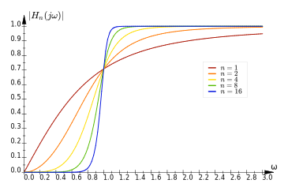

Butterworth Filters
Pieter PDefinition
Normalized Butterworth filters are defined in the frequency domain as follows:
 In order to determine the transfer function, we'll start from the frequency response squared.
We'll assume that the transfer function is a rational function with real coefficients.
Therefore, .
We're looking for the transfer function , so we'll use the identity .
In order to determine the transfer function, we'll start from the frequency response squared.
We'll assume that the transfer function is a rational function with real coefficients.
Therefore, .
We're looking for the transfer function , so we'll use the identity .
Poles of
The poles of this transfer function are given by:
Keep in mind that this is a polynomial of order , so it has complex roots.
For example, for , the poles are:
These are all points on the unit circle, apart.
 The poles are stable if they are in the left half plane, if their complex argument is between 90° and 270°:
The poles are stable if they are in the left half plane, if their complex argument is between 90° and 270°:
Poles of
We want our filter to be stable, so we pick the poles in the left half plane to be the poles of . The unstable poles, for are the poles of . They are the opposites of the poles of :
Butterworth Polynomials
We'll define the normalized Butterworth polynomial as follows:
We'll rearrange the product to group each pole with its complex conjugate.
Then, using the identity , we can further simplify this expression:
Even order :
Odd order :
In this case, is even, and you get a special pole for :
After isolating this pole, we're left with an even number of complex conjugate poles, just like in the case where
was even.
In conclusion, the normalized Butterworth polynomial of degree is given by:
Butterworth Transfer Function
The transfer function has no zeros, so the numerator is a constant. The poles of are given by Equation , so the denominator is given by Equation .
We wanted a DC gain of for :
If we want no phase offset for low frequencies, we can postulate that :
The derivation is analogous for odd .
Therefore, , and we've eliminated all unknown parameters from the transfer function:
High-Pass Butterworth filters
Up until now, we only looked at the low-pass Butterworth filter. There's also a high-pass version:

We can just multiply the numerator and the denominator by to get a more familiar form:
As you can see, the poles will be the same as for the low-pass version. On top of that, there now are zeros
for .
So the transfer function becomes:
Non-normalized Butterworth Filters
Up until now, we only looked at normalized Butterworth filters, that have a corner frequency of .
To get a specific corner frequency , we can just scale , so the definitions become:
If you start recalculating the transfer functions, you'll quickly realize that this just scales everything by a
factor of . The poles no longer lie on the unit circle, but on a circle with radius .
This results in the following transfer functions:
The gain at the corner frequency can easily be determined from the definitions: This is often called the -point or the half-power point, because a sinusoidal input signal at that frequency will result in an output signal that has only half of the power of the input signal: .